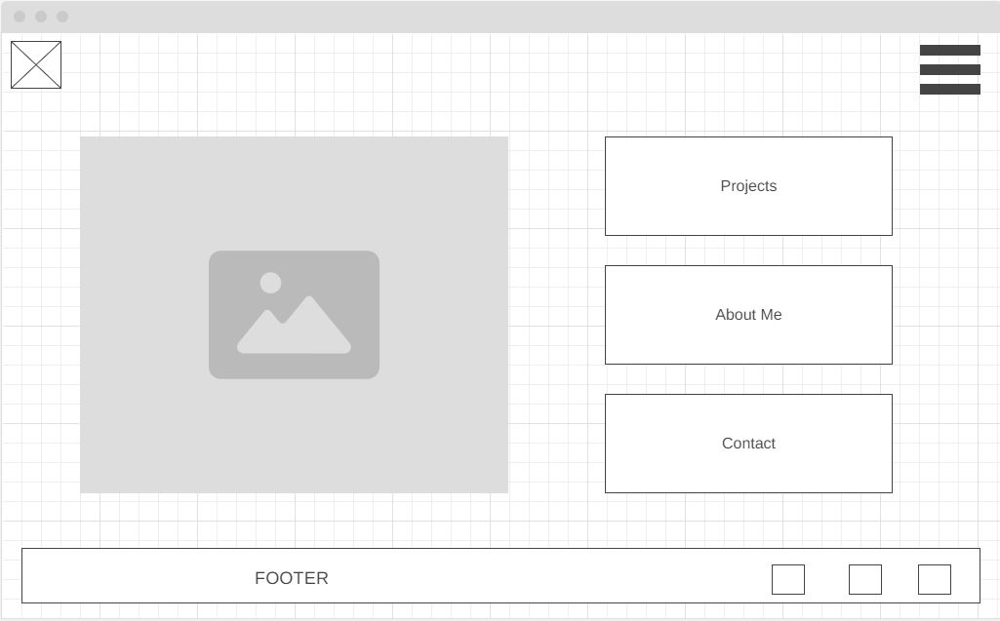
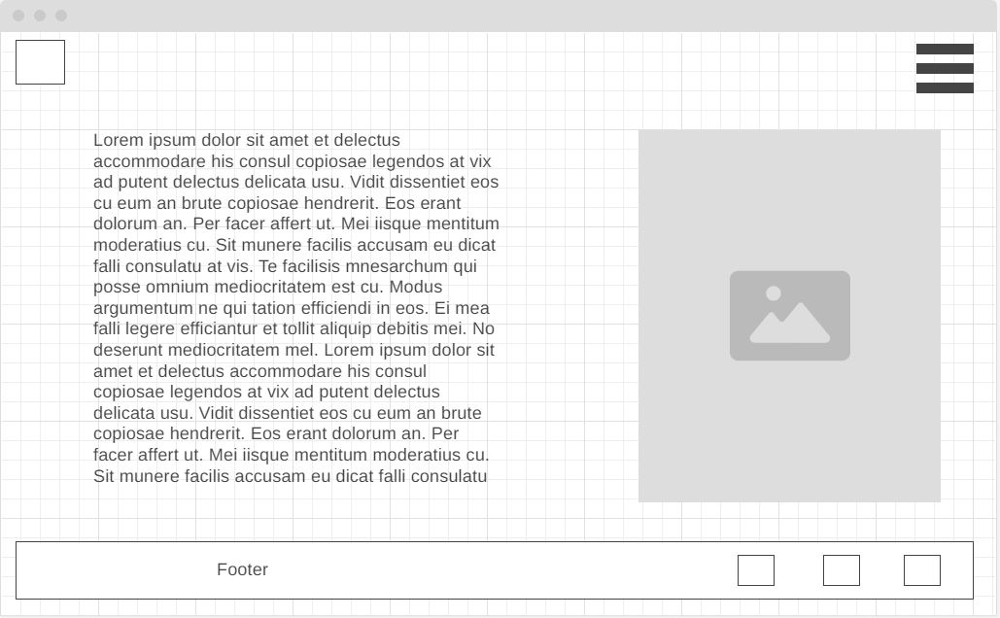
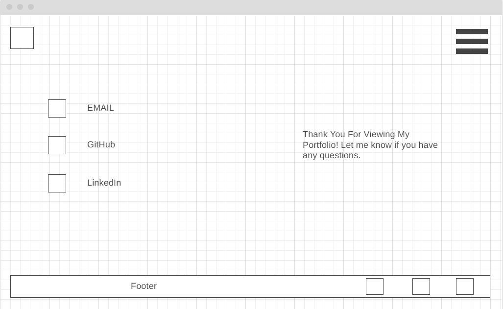

Jason Yale - Portfolio
- I apply for a job and upload resume, cover letter, references, and portfolio. The potential employeer looks at the portfolio to see what this potential employee has to offer. Can this person do the job I have and do it well? This can open the hiring process.
- I can be an independant contractor. I can send my portfolio to those who are interested in hiring me for quick or long projects.
I have never done a color scheme with earthy tones. This time I want to try it and see how it turns out.
I will use 865D36. A brown color for the background of the page. Use white for the text. I will use 93785B. This is a greyish brown color that will be used for borders.
One text font that will be used is Kanit. It is very legible. Another legible font I will use is Arsenal SC. Kanit will be used for headers and bigger fonts.
  